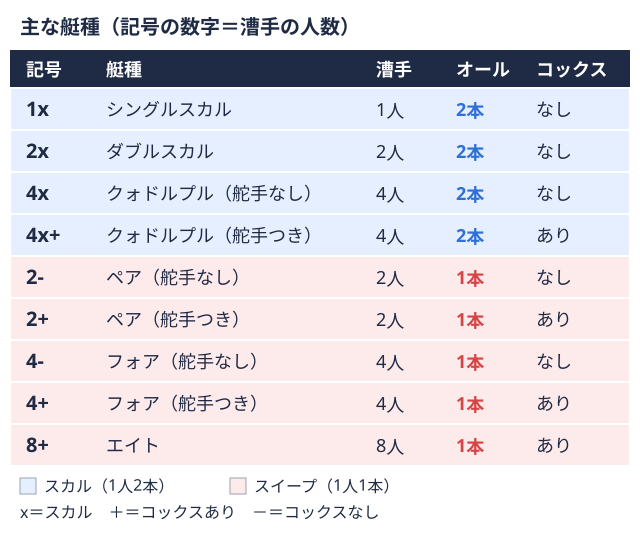

進路・入門 2026-11-17
大学ボート部を辞めたい・退部を考えたら？よくあるきっかけと後悔しないための確認ポイント
大学からボート部（漕艇部）に入った人の中には、練習の途中で「このまま続けていいのだろうか」「辞めたい」と感じる時期を経験する人がいます。未経験からのスタートが多い競技だからこそ、入部後に想像していた生活とのギャップに戸惑う場面も出てきます。本記事では、大学ボート部で退部を考えるきっかけになりやすい要因と、決める前に確認しておきたいポイント、退部後の進路の考え方を整理します。
大学からの入部が多いからこそ、途中で迷う人もいる
ボート競技は、高校までに経験者がほとんどいない「大学から始める人が多い」競技として知られています。実際に大学のボート部紹介でも、大学から始めても努力次第で大会で結果を残せる競技だと説明されることがあります。裏返せば、入部する時点では競技の大変さを実感しにくく、入部後に練習量や生活スタイルのギャップに直面しやすいという面もあります。「辞めたい」と感じること自体は、未経験から始める部員が少なくない競技ではめずらしいことではありません。
退部を考えるきっかけになりやすい要因
練習量・体力面での負荷
朝練を中心とした練習サイクルや、オフシーズンの筋力トレーニングなど、ボート部の練習は体力的な負荷が大きいとされています。大学ボート部の練習はきつい？でも触れているとおり、未経験からついていけるかどうかは個人差が大きく、思っていた以上に体力面がつらいと感じて迷う部員もいます。
怪我や体への不安
腰や肋骨、手のひらのマメなど、ボート特有の怪我や体の不調を経験して、続けることに不安を感じるケースもあります。怪我の種類や予防の考え方はボート部の怪我の種類一覧にまとめています。体の不安を抱えたまま判断を先延ばしにせず、早めに部内や医療機関に相談することが大切です。
学業との両立の難しさ
朝練中心の生活リズムは、授業の出席やレポート・試験対策との両立を難しくする場合があります。大学ボート部は授業・学業と両立できる？で紹介しているように、両立のしやすさは学部のカリキュラムや練習時間帯によって差があり、入部後に想定より厳しいと感じて悩む人もいます。
寮・合宅などの共同生活の負担
艇庫艇やオールなどの用具を保管する建物。部の練習の拠点にもなる。の近くでの寮生活や合宅を前提とする部では、共同生活そのものが負担になり、退部や住まいの変更を同時に考えるきっかけになることがあります。大学ボート部は寮・合宅生活が多い？でも、共同生活のメリットとあわせて、プライバシー確保の難しさなどの注意点を紹介しています。
人間関係やチームの雰囲気
クルー1つの艇に乗る全員のまとまり。レースに出る単位にもなる。を組んで漕ぐ競技であるため、クルー内の人間関係やコミュニケーションがうまくいかないことが、退部を考える大きな要因になる場合があります。スポーツ心理学の分野では、部活動全般を対象にした研究で、人間関係や「このまま続けても見通しが持てない」という感覚が早期の離脱と関連しうることが指摘されています。ボート部に特化した公的な統計ではありませんが、人間関係の悩みを一人で抱え込みやすい点は、他の部活動と共通する傾向といえそうです。
アルバイトや私生活との両立
大学ボート部はアルバイトと両立できる？でも紹介しているとおり、朝練や合宿のスケジュールはアルバイトの時間帯と重なりやすく、経済的な事情から部活との両立に悩む部員もいます。
伸び悩み・結果が出ないこと
2000mのタイムが思うように伸びない、レースのメンバーに選ばれないなど、競技面での伸び悩みが退部を考えるきっかけになることもあります。クルー競技であるボートは、個人の努力だけでなく、乗るクルーやポジションの巡り合わせにも結果が左右される面があるため、一時的な停滞を自分の努力不足と結びつけすぎないことも大切です。
退部を決める前に考えたいこと
退部を考え始めたときに、いきなり決断する前に確認しておきたいことがあります。
まずは身近な人に相談してみる
主将やコーチ、学年が近い先輩など、身近な人に状況を話してみることで、自分では気づかなかった対処方法が見つかることがあります。同じように悩んだ先輩が部に残っている場合、当時どう乗り越えたかを聞けるのも参考になります。
休部という選択肢もある
多くの部では、怪我や学業上の事情などで一時的に活動を休む「休部」という制度があります。退部してしまうと復帰が難しくなる一方、休部であれば気持ちや体調が整ったタイミングで戻る余地が残ります。制度の有無や条件は部ごとに異なるため、主将やマネージャーに確認してみるとよいでしょう。
選手以外の関わり方に変える
レースに出る選手としての活動が負担になっている場合でも、大学ボート部のマネージャーとは？で紹介しているような運営面でのサポート役として部に関わり続ける道もあります。競技から距離を置きつつ、部とのつながりは残すという選択肢も一つの考え方です。
クルーの事情・学年による違いを考える
エイト漕ぐ人8人と舵を取る人1人が乗る最大級の艇。1人1本のオールを持つ。  やフォア4人乗りで、1人1本のオールを持つ艇。舵を取る人が乗る型もある。
やフォア4人乗りで、1人1本のオールを持つ艇。舵を取る人が乗る型もある。
退部を決めた場合に確認しておきたいこと
実際に退部を決める場合は、次のような点を事前に確認しておくと、その後の手続きがスムーズになります。
| 確認したい項目 | チェックのポイント |
|---|---|
| 退部の手続き | 部内規定や大学の体育会への届け出が必要かどうか |
| 用具・備品 | 部から借りている用具やユニフォームの返却方法 |
| 部費・会費 | 未納・前払いの部費がある場合の精算方法 |
| 寮・合宅 | 住まいを移す必要がある場合、退去までのスケジュール |
| 大学との関係 | 体育会所属が奨学金や推薦と結びついている場合の確認先 |
これらは部や大学ごとに運用が異なるため、思い込みで進めず、主将やマネージャー、大学の学生支援窓口に直接確認することをおすすめします。
退部後の進路をどう考えるか
退部後は、学業やアルバイト、他の活動に時間を充てる人もいれば、競技中心の生活から離れたことで気持ちが落ち着き、改めて自分の大学生活を見直す人もいます。4年生の時期であれば、引退のタイミングと同様に、就職活動のスケジュールと重ねて考える必要が出てきます。引退時期の考え方はボート部の引退はいつ？、就職活動全般の進め方は体育会ボート部の就活ガイド、競技経験者の進路の傾向はボート部出身者の進路・就職先で、それぞれ詳しく解説しています。
一方で、入部して間もない時期の退部であれば、他の部活やサークル、学業・留学などに切り替えて大学生活を組み立て直す人も多くいます。大学のボート部はどう選ぶ？でも触れているように、部活動の向き・不向きは入ってみないと分からない部分も大きく、一度の経験が無駄になるわけではありません。
大学によって部の雰囲気・方針は大きく異なる
退部を考えるきっかけになる練習量や人間関係の事情は、大学やチームによって大きく異なります。実際、インカレ（全日本大学ローイング選手権）の出場校数は年度によって増減しており、大学ボート部は減っている？インカレ出場校数25年の推移で紹介しているとおり、部の規模や継続のしやすさは一様ではありません。気になる大学の部の実績は大学別ページ一覧、直近シーズンの結果は2025年度 全日本大学ローイング選手権の結果から確認できます。これから入部を検討する段階であれば、こうしたデータもあわせて、自分に合う部を見極める材料にしてみてください。
まとめ
大学ボート部で「辞めたい」と感じることは、未経験から始める部員が多い競技の特性上、めずらしいことではありません。練習量や怪我、学業との両立、人間関係、寮生活の負担など、きっかけはさまざまです。退部を決める前には、身近な人への相談や休部・マネージャーへの転向といった選択肢も含めて検討し、決めた場合は用具の返却や部費の精算などの手続きも事前に確認しておくと安心です。退部後の進路については、引退時期や就職活動の情報もあわせて参考にしながら、自分のペースで次の一歩を考えてみてください。
出典
- 岐阜大学ボート部活動紹介資料「ボート競技は大学から始める人がほとんど」（https://www1.gifu-u.ac.jp/~gukoclub/circleactivity/H28/H28-21.pdf）
- Jindo T. et al.「Correlates of early attrition from school sports clubs in male senior high school students」Frontiers in Sports and Active Living, 2023（https://www.ncbi.nlm.nih.gov/pmc/articles/PMC10467279/）
- 日本ローイング協会（JARA）公式サイト「大会情報」（https://www.jara.or.jp/race/）
本記事で紹介した退部のきっかけや対処方法は、一般的な傾向として編集部が構成したものであり、特定の大学・団体の制度や統計を示すものではありません。選手個人の氏名は掲載していません。退部の手続きや休部制度の詳細は、各大学・各部の規定を直接確認してください。
部活を続けながら、就活も進めたい方へ
体育会の学生のための就活相談です。無料で、メールアドレス・学年・所属の入力だけで始められます。